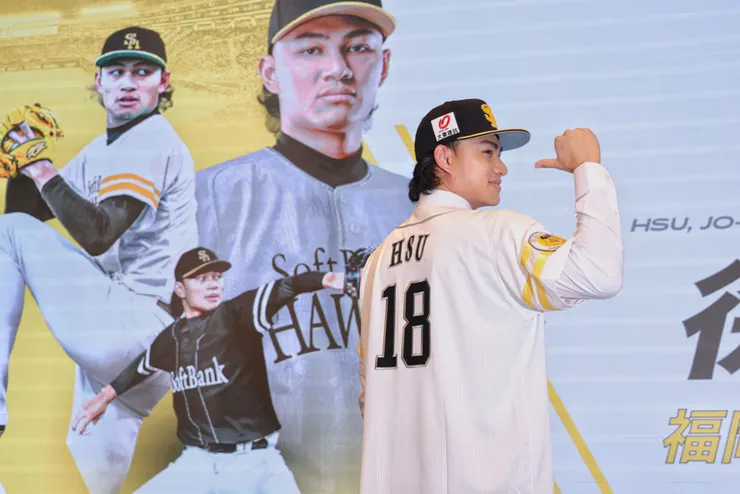

從徐若熙、林維恩、林詩翔與陳柏毓的傷病，重新思考「台灣尚勇」背後的過勞文化
從小打棒球的雞爸爸，每次看到國際賽對到日本，總是告訴自己，我們有看到跟明星對決就好，輸贏不重要。想不到有生之年，能在世界棒球12強賽場上，見證了中華隊擊敗日本職棒組成的明星隊。這真的是最不可思議的故事。但隨著強度拉高到WBC，世界職業棒球選手的最高舞台，當然還是功虧一簣，很可惜。但看到這次亞運名單又徵召一級戰力的職棒明星球員，實在是很難不出來發發牢騷...
世界棒球12強擊敗日本職棒組成的國家隊，與有榮焉
世界冠軍也要休息：從投手傷兵潮看過勞日常
雞爸爸固定會關注美日職棒球員的表現，但最近的棒球新聞已經不能叫做新聞，愈看愈像在看一張不斷更新的病假單...如果搭配亞運這個非一級賽事的徵召名單，真的有點傻眼...即便徵召時間是在受傷前，但這個賽事強度要徵召到日職一軍、MLB選手真的無言以對。
回頭看日職軟銀鷹徐若熙接受椎間盤手術、運動家３Ａ林維恩和台鋼雄鷹林詩翔都接受Tommy John手術、海盜體系的陳柏毓同樣傳出傷情，早就陸續與傷勢新聞連在一起。
幾個月前，他們才穿著中華隊球衣，在WBC、棒球１２強的投手丘上替國家拚戰；如今輕則休養、復健，重則得重新學習，如何把非慣用手的韌帶接到慣用手，再把球投出去！
看著看著，雞爸爸忍不住想問：台灣是不是太習慣叫一個人「再撐一下」了？

「18號」在日本棒球界，是屬於王牌投手的號碼
國際賽的風光 卻反映出台灣人累積的疲勞
職棒選手的傷病發生在賽季外，不代表都是國際賽造成的，但是身體是否過勞的負荷管理卻是一個職業素養的議題。就像軟銀簽下三年15億日圓的投資，不可能只為了打水漂。
投手受傷可能與舊傷、投球機制、訓練方式、球速提升和長期負荷有關。WBC也設有單場用球數與強制休息規定，希望降低選手受傷的風險。但比賽紀錄只看得到場上投了幾球，身體承受的負荷卻遠遠不只這些。
為了三月的WBC，選手必須提早進入比賽狀態；集訓結束後，又立刻返回美職、日職或中職繼續球季。牛棚、熱身賽、跨國移動和每一次全力催球，都不會完整出現在帳面上的投球局數裡。2005年11月4日生的林維恩，今年以20歲之姿入選MLB百大新秀，開季持續的好表現讓他直升3A，眼見就要成為台灣下一位晉升MLB的強投，卻因傷病倒下了。
2025年WBC資格賽的好表現，讓他2026WBC經典賽再度入選國手，但直到受傷後，新聞報導出少棒時曾經單日投超過209球的驚人過往，才發現令人擔心的，不是某個投手或是某場比賽投太多，可能台灣的王牌投手，從小到現在，都沒有真正好好休息過。

19歲就屠殺小聯盟層級的林維恩，獲聯盟單月最佳投手
你累了嗎？球員不也是台灣人的縮影？
這個畫面，其實像極了許多台灣人的生活。上班族工作做不完，就晚一點下班；爸爸媽媽白天工作，晚上接送、洗澡、陪睡，等孩子睡著後，才開始處理自己的事情。
累了沒有關係，明天再撐一下；身體不舒服，也想著忙完再去看。
球員能投，被稱讚耐操；員工願意加班，被稱讚有責任感；爸媽扛下所有事情，被稱讚很堅強。我們總在歌頌一個人撐住，卻很少替願意休息的人鼓掌。直到手臂投不出去、腰挺不起來，或身體用更大的聲音抗議，我們才承認：不是突然倒下，是因為積累而倒下。
有另一種勇敢，是願意把球交給下一個人
亞運當然值得認真準備，但同時也是職棒年輕球員、潛力新秀與業餘好手接棒的舞台，只要搭配一兩個身體健康、參賽意願明確的資深選手，不同等級的賽事，派不同的球員。在WBC、十二強、亞運與亞錦賽的賽場，承擔不同的任務。國家隊有了層次，選手才有輪替與休息的空間，台灣棒球也能培養下一批真正上得了場的人。
選人時除了問「誰最強」，也該多問一句：誰適合在這個時間上場？
台灣人很勇敢，也真的很能撐。但我們不能好用就一直用，直到王牌們都累到倒下。接下來，我們要練習另一種勇敢：承認疲累、接受休息，在需要的時候，把球交給下一個人。
台灣尚勇，也需要休息，真正能走得長久的人，懂得在該休息的時候休息。
你是否偶爾也願意問問自己，是否可以放心休息，相信你身邊的人~~